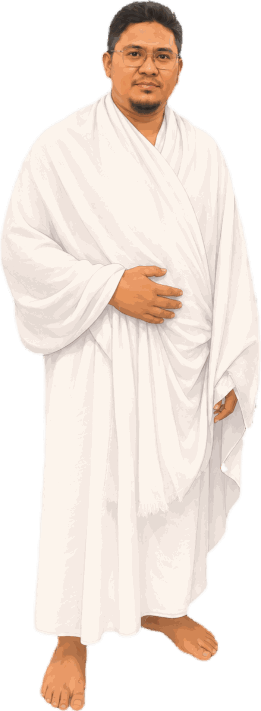

Panduan Umrah
Langkah Demi Langkah
Ikuti perjalanan ibadah Umrah anda dari niat ihram di Miqat sehingga Tahallul — bergambar, mudah difahami, dan mesra warga emas serta jemaah kali pertama.
Mula Belajar ↓Pengenalan Umrah
Fahami dahulu apa itu Umrah, hukumnya, serta rukun dan wajibnya sebelum berangkat.
Maksud Umrah
Umrah menurut bahasa ialah ziarah atau berkunjung. Menurut istilah syarak, Umrah ialah mengunjungi Baitullah untuk mengerjakan ibadat umrah dengan niat dan syarat-syarat tertentu. Umrah meliputi tawaf mengelilingi Kaabah, saie antara Safa dan Marwah, dan tahallul (bercukur atau bergunting).
Hukum & Waktu Umrah
Hukum umrah adalah sunnah muakkad (sangat dituntut) menurut satu pandangan, dan wajib sekali seumur hidup bagi yang mampu menurut pandangan yang lain. Umrah boleh dilakukan sepanjang tahun, berbeza dengan haji yang mempunyai waktu tertentu — kecuali ketika seseorang sedang berada dalam ihram haji sehinggalah selesai kerja-kerja hajinya.
Syarat Sah Umrah
Syarat-syarat asas yang mesti ada pada setiap jemaah:
- Islam — ibadat umrah hanya disyariatkan kepada orang Islam.
- Berakal — tidak sah umrah orang yang hilang akal.
- Baligh — kanak-kanak yang belum baligh tidak diwajibkan (jika dilakukan, sah sebagai sunat tetapi tidak menggugurkan umrah wajib).
- Merdeka — bukan hamba.
- Istita'ah — berkemampuan dari segi tubuh badan, kewangan dan keamanan perjalanan.
Rukun Umrah (5)
MESTI dilakukan. Jika tertinggal satu, umrah TIDAK SAH:
- Niat Ihram — di miqat.
- Tawaf — 7 pusingan mengelilingi Kaabah.
- Saie — 7 perjalanan antara Safa dan Marwah.
- Tahallul — bercukur atau bergunting.
- Tertib — mengikut urutan di atas.
Wajib Umrah (2)
Jika tertinggal, umrah tetap sah tetapi dikenakan Dam dan berdosa jika sengaja:
- Berniat ihram di miqat — tidak melepasi miqat tanpa niat.
- Meninggalkan pantang larang ihram sepanjang tempoh ihram.
Infografik: Perjalanan Umrah Anda
Tujuh peringkat mudah dari mula hingga selesai. Skrol ke kanan untuk lihat semua →
Persediaan Sebelum Miqat
Amalan sunat dan cara berpakaian ihram sebelum tiba di miqat.
Perkara Sunat Sebelum Memakai Ihram
- ✓Memotong kuku
- ✓Menanggalkan bulu ketiak dan ari-ari
- ✓Mengandam misai, janggut dan rambut
- ✓Mandi sunat ihram
- ✓Memakai minyak rambut
- ✓Memakai wangian pada badan sahaja (bukan pada kain ihram). Wanita: wangian yang tidak kuat baunya
Cara Memakai Pakaian Ihram


- Lelaki memakai seluar dalam atau tali pinggang berjahit melingkari badan — pakaian berjahit membentuk anggota dilarang. (Beg pinggang / tali pinggang duit dibenarkan.)
- Lelaki menutup kepala dengan topi atau kain ihram semasa tidur.
- Menyapu wangian pada kain ihram — sunat hanya pada badan sebelum niat.
- Wanita memakai sarung tangan atau purdah yang menyentuh muka.
- Pakai kasut sukan sebelum berniat ihram, kemudian tukar ke selipar selesa yang tidak menutup jari dan tumit (lelaki).
- Sediakan pin penyangkut / klip kain untuk mengetatkan izar — mudah untuk ke tandas.
- Bawa kerusi roda sewa atau maklumkan mutawwif awal jika sukar berjalan jauh.
Solat Sunat Ihram (2 Rakaat)
Selepas memakai pakaian ihram dengan sempurna, disunatkan mendirikan solat sunat ihram dua rakaat. Lafaz niatnya:
Rakaat 1: al-Fatihah + Surah al-Kafirun | Rakaat 2: al-Fatihah + Surah al-Ikhlas.
Miqat & Niat Umrah
Titik permulaan ihram anda. Selepas berniat, bermulalah semua pantang larang ihram.
Dua Laluan Jemaah Malaysia
| Laluan | Miqat | Cara Berniat |
|---|---|---|
| Malaysia → Madinah → Makkah | Zulhulaifah (Bir Ali) | Berhenti & berniat di Masjid Bir Ali |
| Malaysia → Makkah terus | Qarnul Manazil | Berniat di atas pesawat sebelum melepasi miqat — pengumuman akan dibuat dalam pesawat |
- Tertidur di pesawat dan terlepas pengumuman miqat — berniat SELEPAS melepasi miqat mewajibkan Dam.
- Menyangka niat hanya sah jika dilafazkan kuat — niat ialah di hati; lafaz hanya membantu.
- Pakai terus pakaian ihram dari lapangan terbang KLIA jika penerbangan terus ke Jeddah — tidak perlu bersalin dalam tandas pesawat yang sempit.
- Minta kru kabin atau mutawwif mengingatkan anda 30 minit sebelum tiba di miqat.

Lafaz Niat Umrah
Niat umrah ketika di miqat adalah seperti berikut:
Selepas berniat, bermulalah pantang larang ihram ke atas diri anda sehingga selesai tahallul.
Niat Bersyarat (Wanita)
Bagi wanita yang menjangkakan haid mungkin datang sebelum sempat menyempurnakan umrah, digalakkan berniat secara bersyarat:
Jika haid datang, terlepaslah dia daripada pantang larang ihram dan tidak terikat dengan kerja-kerja umrah lagi.
Niat Umrah Badal
Bagi yang mengerjakan umrah untuk pihak lain (yang telah meninggal dunia atau uzur kekal):
Pantang Larang Ihram
Bermula sebaik sahaja anda berniat, sehinggalah selesai tahallul:
| Kategori | Larangan |
|---|---|
| Lelaki sahaja | Memakai pakaian berjahit/bersarung membentuk anggota (seluar, baju kemeja, stokin, kasut menutup jari & tumit); menutup kepala atau sebahagiannya (songkok, kopiah, serban, kain). |
| Wanita sahaja | Menutup muka (purdah/niqab). |
| Umum (semua) | Memakai sarung tangan; memakai wangian pada badan, makanan atau minuman; memakai minyak pada kepala/janggut; menanggalkan rambut atau bulu; memotong kuku; memotong pokok di Tanah Haram; memburu binatang darat; mukadimah persetubuhan; bersetubuh; berkahwin, mengahwinkan atau menerima wakil kahwin. |
Talbiah
Seruan menyahut panggilan Allah — dibaca berulang-ulang selepas niat sehingga hendak memulakan tawaf.
إِنَّ الْحَمْدَ وَالنِّعْمَةَ لَكَ وَالْمُلْكَ، لَا شَرِيكَ لَكَ
Innal-hamda wan-ni'mata laka wal-mulk. La syarika lak.
Bila Mula & Bila Tamat?
- Mula: sejurus selepas niat ihram di miqat.
- Sepanjang perjalanan: disunatkan membanyakkan talbiah menuju ke Makkah — lelaki dengan suara nyaring, wanita dengan suara perlahan.
- Tamat: apabila jemaah mula hendak melakukan tawaf.
Masuk ke Masjidil Haram
Detik pertama menatap Kaabah — masuk dengan adab, langkah kanan dan doa.


Doa Masuk Masjidil Haram (Babussalam)
Ketika masuk buat pertama kali, disunatkan melalui pintu Babussalam dengan mendahulukan kaki kanan, sambil berdoa:
Doa Ketika Melihat Kaabah
Angkat tangan dan panjatkan doa — ini antara waktu mustajab doa:
- Berhenti seketika di anak tangga / laluan rata, jangan berdiri di tengah arus jemaah ketika berdoa.
- Kenal pasti nombor pintu tempat anda masuk (cth: Pintu 1 – King Abdul Aziz) untuk memudahkan keluar semula.
- Tetapkan lokasi berkumpul dengan kumpulan jika terpisah — biasanya di tiang jam Zam-Zam Tower.
Tawaf Umrah
Tujuh pusingan mengelilingi Kaabah, arah lawan jam, bermula dan berakhir di Hajarul Aswad.
Peta Interaktif: Denah Kaabah & Kawasan Mataf
Ketik pada mana-mana penanda emas ⬤ untuk mengenali setiap lokasi penting. Anak panah menunjukkan arah tawaf (lawan jam) — Kaabah sentiasa di sebelah kiri anda.
- Garis lampu hijau di dinding masjid selari dengan Hajarul Aswad menandakan tempat mula dan kiraan pusingan.
- Tawaf di tingkat atas atau dengan kerusi roda dibenarkan dan sah — pusingan lebih jauh, tetapi lebih lapang dan selamat.
- Jangan berhenti mengira jika terputus wuduk — keluar, berwuduk, dan sambung dari pusingan yang terhenti (tidak perlu mula semula).
Maksud & Kedudukan Tawaf
Tawaf ialah mengelilingi Kaabah 7 kali arah lawan jam, bermula dan berakhir di Hajarul Aswad, dengan Kaabah sentiasa di sebelah kiri. Ibadah tawaf sifatnya seperti solat — mesti suci daripada hadas dan najis.
Niat Tawaf Umrah
Perhatian: Bagi tawaf rukun umrah, niat tawaf sudah terkandung dalam niat umrah di miqat. Lafaz berikut adalah bagi menghadirkan hati:
Syarat Sah Tawaf
- Menutup aurat.
- Suci daripada hadas besar dan kecil; suci badan, pakaian dan tempat daripada najis.
- Kaabah di sebelah kiri — jika bahu terpesong menghadap Kaabah atau memasuki Hijr Ismail, pusingan itu terbatal dan hendaklah diulang.
- Bermula dari Hajarul Aswad dan berakhir di Hajarul Aswad, cukup 7 pusingan dengan yakin.
- Dilakukan di dalam Masjidil Haram.
- Dilakukan semata-mata kerana tawaf, bukan tujuan lain.
- Memotong laluan melalui Hijr Ismail — pusingan itu tidak dikira kerana Hijr Ismail sebahagian daripada Kaabah.
- Berhenti berlama-lama di garisan Hajarul Aswad sehingga menyekat arus jemaah.
- Menolak dan berasak untuk mencium Hajarul Aswad hingga menyakiti orang lain — isyarat tangan (istilam) sudah memadai.
- Ragu-ragu bilangan pusingan lalu mengagak yang lebih — ambil bilangan yang paling sedikit (yakin).
Cara Melakukan Tawaf (Ringkasan)
- Berwuduk, masuk Masjidil Haram dan pergi ke penjuru Hajarul Aswad (cari lampu hijau di dinding masjid).
- Istilam: mengadap Hajarul Aswad, angkat tangan memberi isyarat dan kucup tangan sambil menyebut:
بِسْمِ اللهِ وَاللهُ أَكْبَرُ وَلِلَّهِ الْحَمْدُBismillahi wallahu akbar wa lillahil-hamd"Dengan nama Allah, Allah Maha Besar, dan segala pujian milik Allah."
- Mula berjalan mengelilingi Kaabah — ulang istilam pada setiap pusingan apabila tiba semula di penjuru Hajarul Aswad.
- Setiba di Rukun Yamani: usap dengan tangan jika mampu; jika tidak, cukup isyarat tanpa mengucup tangan.
- Antara Rukun Yamani dan Hajarul Aswad, bacalah pada setiap pusingan:
رَبَّنَا آتِنَا فِي الدُّنْيَا حَسَنَةً وَفِي الْآخِرَةِ حَسَنَةً وَقِنَا عَذَابَ النَّارِRabbana atina fid-dunya hasanah, wa fil-akhirati hasanah, waqina 'azaban-nar"Wahai Tuhan kami, kurniakanlah kepada kami kebaikan di dunia dan kebaikan di akhirat, dan peliharalah kami daripada azab api neraka."
- Selesai 7 pusingan, keluar dari arus tawaf dan dirikan Solat Sunat Tawaf di belakang Maqam Ibrahim.
Penanda Pusingan Tawaf Anda
Gunakan pembilang ini semasa amali atau latihan. Ketik + Tambah setiap kali tiba semula di penjuru Hajarul Aswad (lampu hijau):

Solat Sunat Tawaf & Air Zamzam
Dua ibadah selepas selesai tujuh pusingan tawaf.
Solat Sunat Tawaf (2 Rakaat)
Tempat terbaik: di belakang Maqam Ibrahim. Jika penuh, boleh di dalam Hijr Ismail (di bawah pancuran emas), berhampiran Kaabah, atau di mana-mana tempat dalam Masjidil Haram.
Rakaat 1: al-Fatihah + al-Kafirun | Rakaat 2: al-Fatihah + al-Ikhlas.
- Tidak perlu berebut ruang tepat di belakang Maqam Ibrahim — mundur jauh sedikit ke kawasan lapang, pahalanya sama.
- Boleh solat sambil duduk di atas kerusi jika uzur.
Minum Air Zamzam
Selepas solat sunat tawaf, disunatkan minum air Zamzam — dalam keadaan berdiri menghadap kiblat sambil berdoa dengan hajat masing-masing.
Saie (Safa ↔ Marwah)
Berjalan ulang-alik antara Bukit Safa dan Bukit Marwah sebanyak tujuh perjalanan — mengenang perjuangan Sayyidatina Hajar mencari air untuk Nabi Ismail AS.
Rukun & Syarat Sah Saie
- Bermula di Safa, berakhir di Marwah — jika mula di Marwah, perjalanan pertama itu tidak dikira.
- Cukup 7 perjalanan: Safa → Marwah = 1, Marwah → Safa = 2, dan seterusnya.
- Dilakukan selepas tawaf yang sah.
- Melalui laluan yang ditetapkan (mas'a) sepenuhnya hingga ke penghujung setiap bukit.
- Yakin bilangan — jika was-was, ambil bilangan paling sedikit.
Infografik: Kiraan 7 Perjalanan Saie
Penanda Pusingan Saie Anda
Gunakan pembilang ini semasa amali atau latihan. Ketik + Tambah setiap kali tiba di penghujung bukit:
Bacaan & Amalan Sunat Saie
Di atas Bukit Safa sebelum memulakan perjalanan — mengadap ke arah Kaabah, angkat tangan dan baca 3 kali (diulang juga di atas Marwah):
Selepas zikir ini, angkat tangan dan berdoalah dengan hajat masing-masing, kemudian ulangi zikir dan doa sebanyak 3 kali sebelum turun memulakan perjalanan. Di atas Bukit Safa juga dibaca:
Di kawasan lampu hijau (bekas lembah tempat Sayyidatina Hajar berlari): lelaki disunatkan berlari-lari anak; wanita berjalan biasa. Di situ dibaca:
Amalan sunat lain: keluar ke tempat saie melalui pintu Safa, mendaki sedikit di kedua-dua bukit sambil menghadap Kaabah, sentiasa berzikir, dan berkeadaan berwuduk (saie tetap sah tanpa wuduk).
- Memulakan saie di Marwah — perjalanan pertama tidak dikira; pastikan bermula di Safa (ikut papan tanda الصفا).
- Mengira satu ulang-alik (pergi-balik) sebagai satu — sebenarnya ia dikira DUA perjalanan.
- Wanita turut berlari di kawasan lampu hijau — sunat lari-lari anak hanya untuk lelaki.
- Membuat saie sebelum tawaf, atau saie untuk umrah tanpa tawaf yang sah.
- Jumlah jarak saie ± 3.15 km — gunakan laluan tengah berkerusi roda / skuter elektrik yang disediakan jika perlu.
- Berhenti rehat di penghujung bukit seketika; tiada larangan duduk berehat semasa saie.
- Kawasan mas'a berhawa dingin, tetapi bawa botol air Zamzam bersama.


Tahallul (Bercukur / Bergunting)
Rukun terakhir — tanda keluar daripada keadaan ihram. Dilakukan sejurus selepas menyempurnakan tujuh perjalanan saie.
Dua Pilihan Tahallul
Tahallul bukan sunat dan bukan pilihan — ia adalah rukun Umrah. Meninggalkannya dengan sengaja menyebabkan umrah tidak sah (belum sempurna) dan pantang larang ihram kekal berjalan.
- Menggunting rambut sendiri atau pasangan sebelum dirinya sendiri bertahallul — orang yang masih berihram tidak boleh menanggalkan rambut sesiapa. Mintalah orang yang sudah halal (selesai tahallul) menggunting untuk anda dahulu.
- Wanita menggunting rambut di khalayak terbuka hingga terdedah aurat — lakukan di tempat tertutup atau di dalam kumpulan wanita.
- Menyangka memotong 1–2 helai sudah memadai — pastikan sekurang-kurangnya 3 helai.
- Terus menukar pakaian biasa sebelum bergunting — pantang larang ihram masih berjalan sehingga selesai tahallul.
Umrah Selesai — Semakan Akhir
Tahniah! Semak semula setiap rukun dan wajib umrah anda.
Ringkasan Umrah Dalam Satu Infografik
Checklist Rukun Umrah
- ✓Niat ihram (di miqat)
- ✓Tawaf — 7 pusingan lengkap & yakin
- ✓Saie — 7 perjalanan, mula Safa tamat Marwah
- ✓Tahallul — cukur / gunting minimum 3 helai
- ✓Tertib — mengikut urutan
Checklist Wajib Umrah
- ✓Niat ihram dilakukan DI miqat (tidak melepasinya)
- ✓Pantang larang ihram terpelihara sepanjang ihram
Tempat & Waktu Mustajab Doa
Rebutlah peluang berdoa di lokasi-lokasi ini sepanjang berada di Tanah Haram:
- Ketika mula melihat Kaabah
- Multazam (antara Hajarul Aswad dan pintu Kaabah)
- Di dalam Hijr Ismail
- Di belakang Maqam Ibrahim
- Di Rukun Yamani
- Di dalam Kaabah
- Ketika melaksanakan tawaf dan saie
- Di atas Bukit Safa dan Marwah
Doa Penutup — Memohon Umrah Diterima
Selepas tahallul, umrah telah pun sempurna. Rebutlah saat ini untuk bermunajat memohon agar ibadah diterima Allah SWT — sepertimana doa Nabi Ibrahim AS dan Nabi Ismail AS selepas membina Kaabah:
اللَّهُمَّ اجْعَلْهَا عُمْرَةً مَبْرُورَةً وَذَنْبًا مَغْفُورًا وَسَعْيًا مَشْكُورًا
Allahummaj-'alha 'umratan mabruratan, wa dzanban maghfuran, wa sa'yan masykura
"Ya Allah, jadikanlah ini umrah yang mabrur, dosa yang diampunkan, dan usaha yang diberkati."